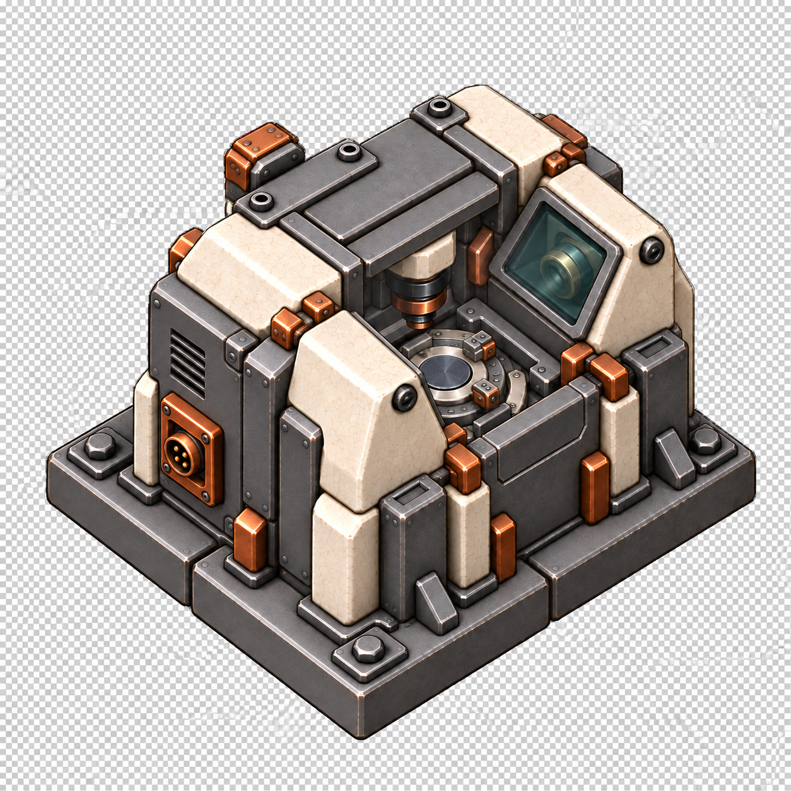
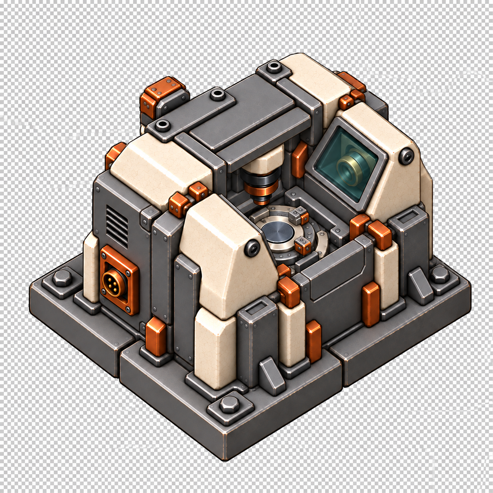
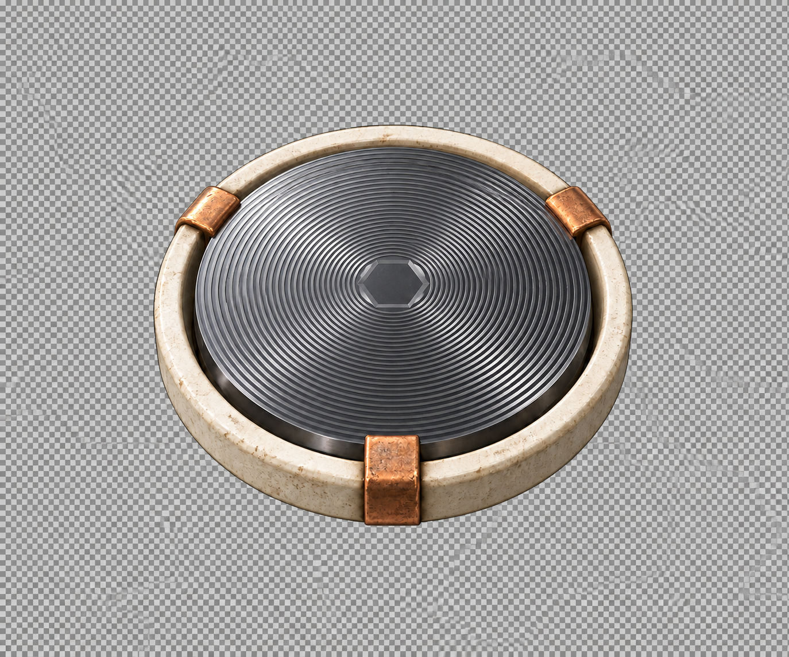
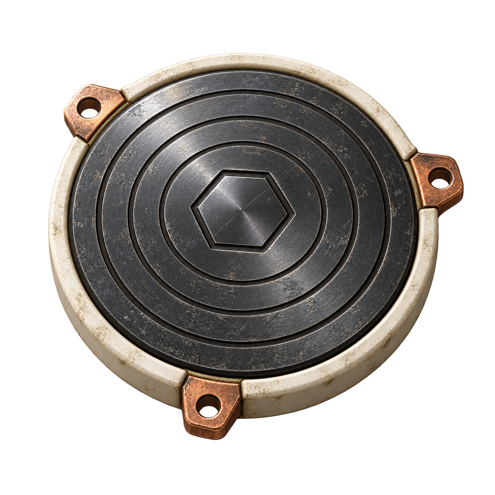
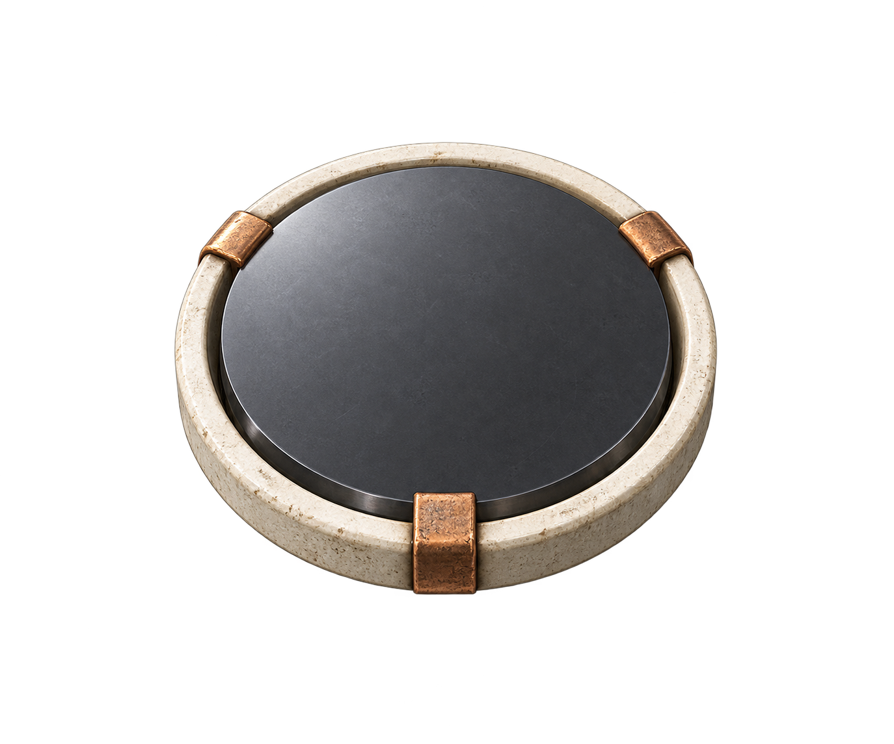
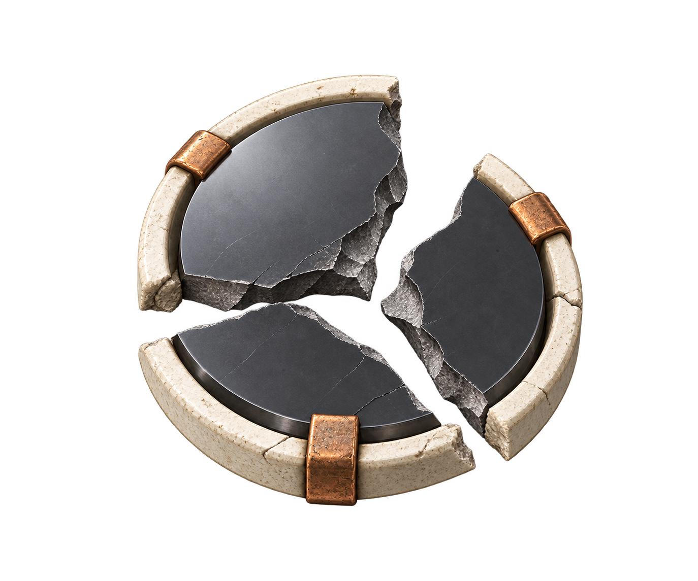
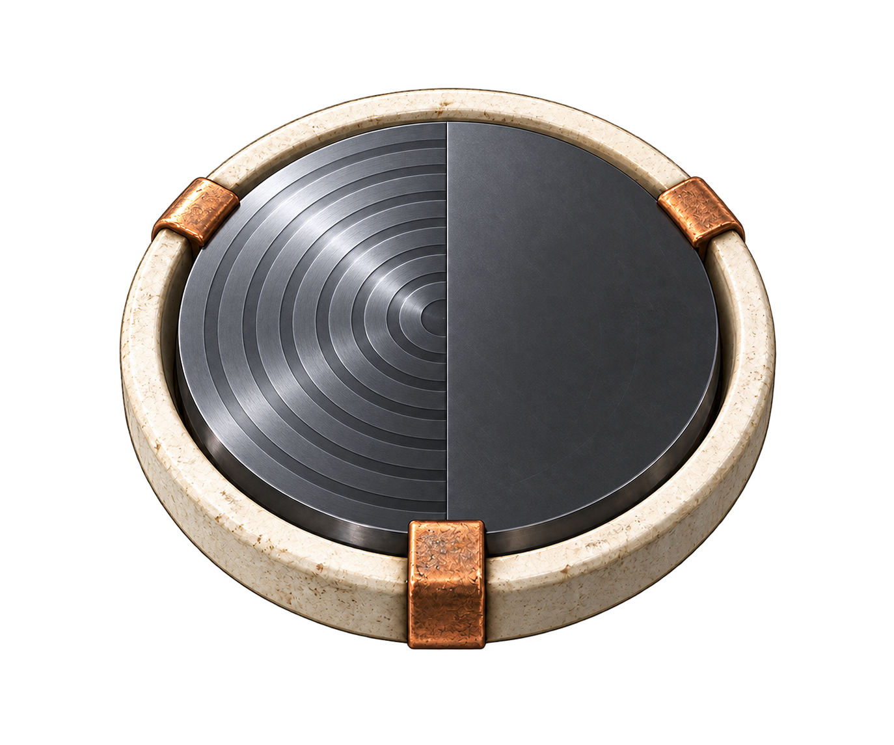

fabrication-cell-r3-v1
needs-correction · alpha 0.0%

32px48px96pxOriginal source
Opaque painted checkerboard; rejected for runtime. Enclosure/port geometry needs directional correction.
Exact prompt and provenanceFour item states and failed side-view corrections. Candidates only; no animation or runtime promotion. Previews use unchanged source images inside 32/48/96 px boxes, including source padding.
needs-correction · alpha 0.0%

32px48px96pxOpaque painted checkerboard; rejected for runtime. Enclosure/port geometry needs directional correction.
Exact prompt and provenanceneeds-correction · alpha 0.0%

32px48px96pxOpaque painted checkerboard; rejected for runtime. Enclosure/port geometry needs directional correction.
Exact prompt and provenanceneeds-correction · alpha 0.0%

32px48px96pxOpaque painted checkerboard; rejected for runtime.
Exact prompt and provenanceneeds-registration · alpha 51.5%

32px48px96pxReal alpha; small-size and fixture registration remain pending. Generated edges need light-background inspection. Carrier tabs and projection differ from blank; inventory concept only.
Exact prompt and provenanceneeds-registration · alpha 70.0%

32px48px96pxReal alpha; small-size and fixture registration remain pending. Generated edges need light-background inspection.
Exact prompt and provenanceneeds-registration · alpha 66.4%

32px48px96pxReal alpha; small-size and fixture registration remain pending. Generated edges need light-background inspection.
Exact prompt and provenanceneeds-registration · alpha 55.5%

32px48px96pxReal alpha; small-size and fixture registration remain pending. Generated edges need light-background inspection.
Exact prompt and provenance